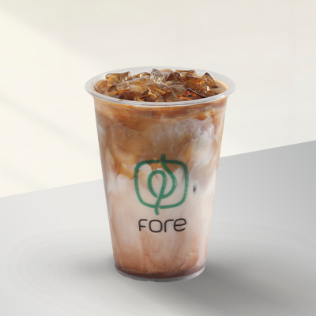

Beverage
Iced Café Malt Latte
Read More
Iced Classic Latte
Read MoreHot Cappuccino
Read MoreIced Café Latte
Read More

Iced Salted Caramel Mocha
Read MoreNutty Oat Latte
Read More
Hot Café Malt Latte
Read More
Iced Cappuccino
Read More
Double Iced Shaken Latte
Read More
Hot Café Latte
Read More
Hot Salted Caramel Mocha
Read More
Hot Espresso
Read More- Tingkat Gula: tanpa gula, kurang gula, sedang, manis, extra manis.
- Jenis Susu: susu sapi, susu rendah lemak, susu almond, susu kedelai, susu oat.
- Ukuran Minuman: kecil (250 ml), sedang (350 ml), besar (450 ml).
- Tambahan Lain: ekstra shot espresso, syrup vanilla, syrup caramel, bubuk cokelat, whipped cream.